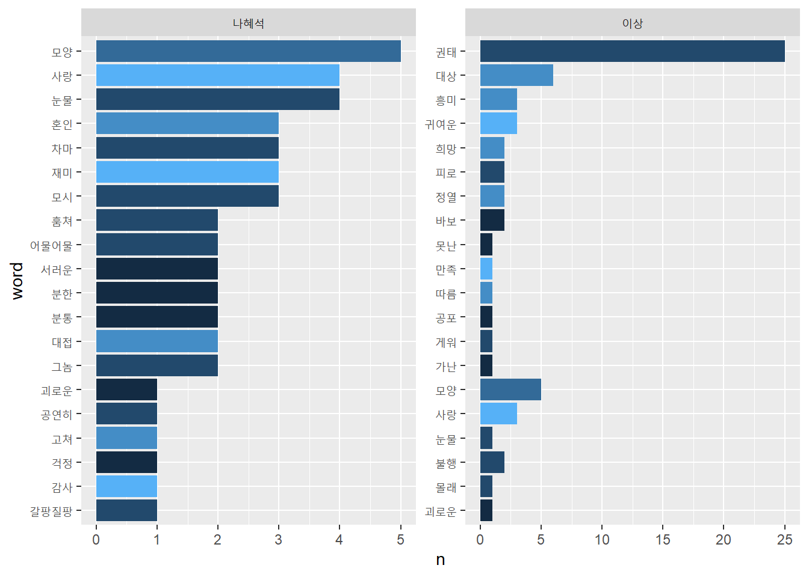
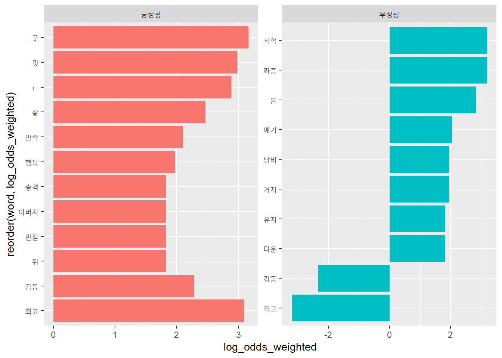

Chapter 7 자료2: 크롤링
크롤링(crawling)은 소프트웨어 등이 웹을 돌아다니며 필요한 정보를 찾아 수집해 오는 작업이다. 일반적으로 웹 크롤링이라고 하면 구글과 같은 검색엔진이 사용자가 검색하기 전에 수천억개에 달하는 웹페이지 정보를 수집해 검색 색인에 정리하는 작업을 말하지만, 일반 사용자들이 필요한 정보를 소규모로 수집하는 작업도 크롤링이라고 한다.
여러 웹페이지를 돌아다니며(crawling) 수집한다는 점에서 크롤링이라고 한다. 웹페이지의 정보를 긁어 온다(scraping)는 의미에서 스크래핑이라고도 한다.
일반 사용자가 크롤링을 하는 이유는 효율 때문이다. 소규모라도 사람이 수작업으로 하기에는 많은 양을 다룰 때 크롤링한다. 예를 들어, 지난 1년간 특정 주제어가 등장하는 주요 일간지의 뉴스 기사를 수집한다면, 정보의 양 자체는 소규모이나, 수작업으로 처리하기는 너무 많은 시간을 소모하게 된다.
7.1 개관
크롤링은 인터넷 상의 웹을 통해 데이터를 요청하고 응답받는 과정과 확보한 데이터에서 필요한 내용을 추출하는 작업으로 구분할 수 있다.
웹을 통해 데이터를 요청하고 응답받는 작업은 httr패키지를 이용하고, 응답받은 HTML데이터에서 내용을 추출하는 작업은 rvest패키지를 이용한다.
추출한 내용은 tidyverse 등의 패키지를 이용해 전처리하고, tidytext 등의 패키지를 이용해 의미를 추출한다.
library(httr)
library(rvest)## Loading required package: xml2library(tidyverse)## -- Attaching packages --------------------------------------- tidyverse 1.3.0 --## √ ggplot2 3.3.2 √ purrr 0.3.4
## √ tibble 3.0.4 √ dplyr 1.0.2
## √ tidyr 1.1.2 √ stringr 1.4.0
## √ readr 1.4.0 √ forcats 0.5.0## -- Conflicts ------------------------------------------ tidyverse_conflicts() --
## x dplyr::filter() masks stats::filter()
## x readr::guess_encoding() masks rvest::guess_encoding()
## x dplyr::lag() masks stats::lag()
## x purrr::pluck() masks rvest::pluck()library(tidytext)7.1.1 웹 작동방식
웹은 월드와이드웹(World Wide Web)의 준말이다. ’범세계적인 망’이란 의미다. 인터넷(Internet) 상에서 HTTP(Hypertext Transfer Protocol: 초본문 전송 규약)를 이용해 정보를 주고받는다.
웹에는 클라이언트(client)와 서버(server) 등 두 종류의 주체가 있다. 클라이언트는 의뢰자로서 서버에 정보제공을 요청(request)한다. 서버는 제공자로서 의뢰자의 요청에 대해 응답(response)한다.
클라이언트와 서버가 정보를 요청하고 응답하기 위해서는 서로 일정한 규약을 따라야 한다. HTTP가 웹에서 클라이언트와 서버가 정보를 주고받는 규약이다.
7.1.1.1 URL
모든 웹서버는 고유의 주소를 갖고 있다. 클라이언트가 웹브라우저에 웹서버의 주소를 입력해 원하는 웹서버(웹사이트)를 찾아 방문한다. 이 주소를 URL(Uniform Resource Location)라고 한다. 네이버의 URL은 https://www.naver.com이고, 구글의 URL은 https://www.google.com이다.
웹서버에는 다양한 문서와 페이지 등의 자원이 저장돼 있다. 이들 자원의 위치에 대한 식별자를 URI(Universal Resource Identifier)라고 한다. 예를 들어, 네이버의 뉴스의 경제섹션에 접근할 수 있는 주소인 https://news.naver.com/main/main.nhn?mode=LSD&mid=shm&sid1=101는 URI다.
개념적으로 URI에 URL이 포함돼 있지만, URI와 URL을 구분하지 않고 사용하기도 한다. 여기서는 URL과 URI를 구분하지 않고 사용한다.
URL에는 웹서버 이름(hostname), 웹페이지의 경로(path), 질의문(Query string) 등 크게 3개 요소로 이뤄져 있다 (Figure @res(fig:url)).
Figure 7.1: 웹 주소 요소
sid파라미티어의 값이 101이다. 경제섹션을 의미한다. 파라미터의 값을 바꿔 클라이언트가 서버에 보내는 질의내용을 바꿀 수 있다. 예를 들어, 네어버뉴스 URL에서 sid=파라미터의 값을 101에서 102로 바꾸면 사회섹션이 된다.
URL에 대한 보다 자세한 내용은 모질라재단의 What is a URL? 참조.
7.1.2 연습
네이버뉴스에 접속해 ’백신’을 검색어로 2020년 1월 1일부터 2020년 1월 2일에 국한한 뉴스를 검색해보자. 질의문이 포함된 URL이 웹브라우저의 주소창에 뜬다.
이 URI를 요소별로 구분해보자.
- https://search.naver.com
- /search.naver
- ?where=news
- &query=%EB%B0%B1%EC%8B%A0
- &sm=tab_opt
- &sort=0
- &photo=0
- &field=0
- &reporter_article=
- &pd=3
- &ds=2020.01.01
- &de=2020.01.02
- &docid=
- &nso=so%3Ar%2Cp%3Afrom20200101to20200102%2Ca%3Aall
- &mynews=0
- &refresh_start=0
- &related=0
&query=%EB%B0%B1%EC%8B%A0에서 query=는 질의문의 파라미터 이름이고, %EB%B0%B1%EC%8B%A0는 query=의 값이다. 한글 백신에 해당한다. (한글이 URL에 포함될 때 영어와 숫자로 강제변환되는 이유는 인코딩 때문이다. 자세한 내용은 생활코딩 escape항목 참조.)
URL에서 이 파라미터의 값을 영화랭킹으로 바꿔주면 영화랭킹으로 검색한 결과를 제시한다.
ds=가 시작일, de=가 종료일 파라미터다. nso=도 기간 설정 파라미터다. nso=의 값을 from20200101to20201231로 변경하면 2020년 1월 1일부터 2020년 12월 31일 사이의 기사가 검색된다.
파라미터의 값이 없거나 0인 부분은 값이 지정되지 않은 파라미터다. HTTP요청과정에 없어도 된다.
따라서 아래 요소만 있어도 2020년 1월 1일부터 2020년 1월 2일 사이의 백신을 검색한 결과가 나온다.
- https://search.naver.com
- /search.naver
- ?where=news
- &query=%EB%B0%B1%EC%8B%A0
- &sm=tab_opt
- &pd=3
- &ds=2020.01.01
- &de=2020.01.02
이 요소를 다음과 같은 방식으로 URL을 구성하면 검색어와 날짜를 변경해가며 웹서버에 요청할 수 있다. 예를 들어, query_term의 내용을 다른 검색어(예: 오락)로 바꾸면, 네이버뉴스 검색 창에 검색어를 직접 입력하지 않고도 해당 검색어로 찾는 URL을 만들 수 있다.
host <- 'search.naver.com/search.naver'
where <- '?where=news'
query <- '&query=오락'
ds <- '&ds=2020.01.01'
de <- '&de=2020.01.02'
sm <- '&sm=tab_opt'
pd <- '&pd=3'
url <- str_c(host, where, query, ds, de, sm, pd)
url## [1] "search.naver.com/search.naver?where=news&query=오락&ds=2020.01.01&de=2020.01.02&sm=tab_opt&pd=3"stringr패키지의 str_c()함수는 문자형 값(string)을 결합(combine)한다.
7.1.2.1 크롤링 주의사항
크롤링을 할때는 불법행위가 되지 않도록 주의한다. 크롤링의 합법성 여부에 대한 논의는 완결되지 않았다. 이제까지의 판결(2021년 3월 기준)에 따르면 공개된 웹사이트에 대한 크롤링은 불법이 아닌 가능성이 크다. 확실하게 말할 수 없는 이유는 미국에서는 공개된 웹사이틔의 크롤링 행위 자체는 합법적이라고 판결이 나왔지만, 한국에서는 크롤링 행위 자체에 대한 합법성에 대한 부분이 명확하게 제시돼 있지 않기 때문이다.
미국 캘리포니아 연방고등법원(9차 순회 법원: the 9th Circuit)은 2019년 크롤링에 대해 기념비적인 판결을 내렸다. 상대를 적시해 명시적으로 크롤링을 하지 말라는 서한(cease-and-desist letter)을 발송했어도, 로그인이 필요없는 공개된 내용이라면 크롤링이 불법이 아니라고 판결했다 (관련기사.
위 판결에 따르면, 비공개(즉, 로그인이 필요한) 사이트의 크롤링은 불법이 될수도 있다. 로그인은 서비스제공자의 사용약관을 따른다는 동의를 한것이기 때문에, 사용약관(Terms of service)에서 기계에 의한 크롤링을 금지하고 있다면 크롤링은 불법이 된다. 따라서 로그인을 통한 크롤링은 웹사이트가 제공하는 API를 이용하는 것이 안전하다.
공개된 웹사이트라도 크롤링으로 수집한 데이터를 영업에 무단 사용하면 멍백하게 불법이다. 예를 들어, 취업정보 업체인 사람인HR이 잡코리아의 사이트에서 채용정보를 크롤링해 자사의 웹사이트에 게재한 행위는 불법이다. (관련기사)
크롤링 행위자체가 불법은 아니어도 크롤링 행위로 웹사이트에 피해를 주지는 말아야 한다. 짧은 시간에 너무 많은 접속을 하게 되면 웹서버에 피해를 줄수 있기 때문에 적당한 시간적 간격을 두고 접속한다 (예: Sys.sleep() 함수). 개인 수준의 크롤링은 Sys.sleep()를 설정하지 않아도 네이버 같은 서비스에는 피해를 주지 않겠지만, 피해를 주는 공격으로 간주돼 차단 당할 수 있다.
또한 User Agent 정보를 크롤러에 지정해 서버관리지에게 누가 서버에 접근하는지 알도 있도록 하는 것도 필요하다. 차단당할수도 있다.
7.2 HTTP요청과 응답 httr
클라이언트가 웹서버의 응답을 HTTP(Hypertext Transfer Protocol: 초본문 전송 규약)로 요청(request)할 때 GET POST PUT DELETE 등 4개 방식을 이용한다. 크롤링에는 GET과 POST 두가지 방식이 주로 쓰인다.
GET방식의 요청은 질의문이 URL에 모두 표시된다. 웹브라우저 주소창에 나타난 URL만으로 HTTP요청을 완료한다.
‘가져오다’ ’받다’는 GET의 의미대로 웹브라우저에 보이는 URL로 웹서버에 요청해 데이터를 가져온다. 클라이언트가 웹서버에 데이터를 요청할 때 URL에 질의문(Query string) 등의 요청 정보가 모두 표시된다. 크롤링할 때 웹브라우저의 주소창에 보이는 웹서버의 URL만 이용해 웹서버에 요청할 수 있다.
POST방식은 질의문이 웹브라우저의 주소창에 나타나지 않는다. 질의문 내용이 브라우저 안에 있어, 이를 브라우저가 ’post’해야 HTTP요청이 완료된다.
‘붙이다’ ’게시하다’는 POST의 의미대로 웹서버에 HTTP요청할 때, 브라우저에 보이는 주소에 질의문을 덧붙여 요청한다. 클라이언트가 서버에 데이터를 요청할 때 질의문 등의 요청 정보가 모두 표시되지 않기 때문에 웹브라우저의 주소창에 보이는 웹서버의 URL만으로는 웹서버에 요청 내용을 파악할 수 없다.
POST방식으로 HTTP를 처리하는 웹페이지를 크롤링하기 위해서는 사용자가 브라우저의 개발자도구에서 요청에 필요한 질의정보를 찾아 요청해야 한다(추후 상세한 설명).
R로 크롤링할 때는 httr패키지에서 제공하는 GET()과 POST()할수를 이용한다. httr패키지는 tidyverse패키지에 포함돼 설치되나 tidyverse 탑재시 함께 부착되지 않기 때문에 별도로 library()함수로 R환경에 탑재한다.
7.2.1 GET 방식
httr패키지의 GET()함수를 이용한다. 위키백과의 HTML항목을 GET()함수로 받아보자.
library(httr)
wiki_url <- 'https://ko.wikipedia.org/wiki/HTML'
res <- GET(wiki_url)
res웹페이지(여기서는 위키백과 HTML항목)의 응답(Response)받은 객체에 응답에 대한 메타데이터가 들어 있다. 상태코드(status)는 200, 인코딩(charset)은 UTF-8이다.
상태코드는 클라이언트의 요청에 대한 웹서버의 응답상태다. 각 코드의 의미는 다음과 같다.
1xx 조건부 응답. 요청을 받고 처리중.
2xx 성공. 요청을 정상적으로 처리.
3xx 재전송. 요청완료를 위해 추가 동작.
4xx 클라이언트 오류. 처리불능인 요청(권한 없음, 주소 없음 등)
5xx 서버 오류. 서버가 요청처리를 못해 불능(서버 다운 등)
자세한 내용은 위키백과 HTTP 상태코드 참조.
7.2.1.1 연습
네이버뉴스에 접속해 ’인공지능’을 검색어로 2021년 1월 1일부터 2021년 1월 31일에 국한한 뉴스를 검색해 URL을 확보한 다음, URL을 요소별로 분해한 다음, 이를 str_c()함수로 다시 URL을 완성하고, 이 URL을 이용해 GET방식으로 요청한 다음, 서버의 응답 상태코드(status)결과를 제시하시오.
- URL 확보
URL에서 프로토콜 부분(https://)을 제외하고 복사하면 한글 검색어가 그대로 유지된다.
search.naver.com/search.naver?where=news&query=인공지능&sm=tab_opt&sort=0&photo=0&field=0&reporter_article=&pd=3&ds=2021.01.01&de=2021.01.31&docid=&nso=so%3Ar%2Cp%3Afrom20210101to20210131%2Ca%3Aall&mynews=0&refresh_start=0&related=0
요소별 분해 search.naver.com/search.naver?where=news &query=인공지능 &sm=tab_opt &sort=0 &photo=0 &field=0 &reporter_article= &pd=3 &ds=2021.01.01 &de=2021.01.31 &docid= &nso=so%3Ar%2Cp%3Afrom20210101to20210131%2Ca%3Aall &mynews=0 &refresh_start=0 &related=0
URL 결합
host <- 'search.naver.com/search.naver'
where <- '?where=news'
query <- '&query=인공지능'
ds <- '&ds=2021.01.01'
de <- '&de=2021.01.31'
sm <- '&sm=tab_opt'
pd <- '&pd=3'
url <- str_c(host, where, query, ds, de, sm, pd)
url## [1] "search.naver.com/search.naver?where=news&query=인공지능&ds=2021.01.01&de=2021.01.31&sm=tab_opt&pd=3"- 요청
GET(url)## Warning in strsplit(rawToChar(raw), "\r?\n"): 이 로케일에서는 입력문자열 1는 유
## 효하지 않습니다## Response [https://search.naver.com/search.naver?where=news&query=인공지능&ds=2021.01.01&de=2021.01.31&sm=tab_opt&pd=3]
## Date: 2021-03-25 01:09
## Status: 200
## Content-Type: <unknown>
## Size: 746 kB
## <BINARY BODY>상태코드(Status) 200. 성공.
7.2.2 POST방식
GET방식에서는 URL에서 질의 내용이 모두 포함돼 있지만, POST방식에서는 URL에 질의 내용이 들어 있지 않다. 질의 정보가 브라우저 안에 있다.
먼저, 한국학술지인용색인에서 한국학술지인용색인에 접속해 ’백신`으로 검색해, 브라우저의 주소창에 나타난 URL를 확인해 보자.
GET방식의 주소와 달리, 질의 정보가 없다. POST방식에서 질의 정보는 브라우저의 개발자정보를 열어 확보할수 있다. 개발자도구(브라우저 F12 키)를 열면[네트워크]항목이 뜬다(Figure: 7.2). (마우스 오른쪽 버튼 -> [검사(Inspection)] -> [Network] -> [Doc]).

Figure 7.2: 개발자도구 화면
개발자도구가 뜨면 브라우저를 재장전(reload: Ctrl+R)한다. 하단 왼쪽에 URL의 경로정보가 뜬다 (Figure: 7.3).

Figure 7.3: 개발자도구 화면: 경로
개발자정보 화면의 경로정보를 클릭하면 오른쪽에 브라우저의 요청청보와 서버의 응답정보가 나타난다. 스크롤다운하면 [Form Data] 항목에 브라우저의 질의 정보가 있다. 브라우저의 왼쪽 상단에 있는 [검색결과] 옵션에서 주제를 ’사회과학’을 선택해 [선택항복 재검색]을 클릭해 보자. 질의정보가 갱신된다 (Figure: 7.4).
Figure 7.4: 개발자도구 화면: 질의정보
[Form Data]에 있는 질의정보를 그대로 httr패키지의 POST()함수에 투입하면 서버에 요청정보를 만들 수 있다. POST()함수의 body =인자에 list로 만들어 준다.
POST()함수로 요청할 때 문자가 깨지는 경우가 있으므로, 시스템 로케일을 Sys.setlocale()함수을 이용해 영문으로 설정한 다음, 다시 국문으로 바꿔준다.
library(httr)
Sys.setlocale("LC_ALL", "English")
host <- 'https://www.kci.go.kr/kciportal/po/search/poTotalSearList.kci'
url <- POST(
host,
body =
list(
poSearchBean.printKeyword = '백신',
poSearchBean.sortName = 'SCORE',
poSearchBean.sortDir = 'desc',
poSearchBean.docsCount = 10,
poSearchBean.startPg = 1,
reSrchCondition = 'all',
reSrchKeyword = '백신',
from = 'searchFromTotal'
)
)
Sys.setlocale("LC_ALL", "Korean")상태코드(Status)가 200으로 요청과 응답상태가 성공이다.
7.3 텍스트 추출 rvest
GET()과 POST()함수로 받은 파일에는 다양한 응답정보가 들어있다. glimpse()함수로 앞서 POST()함수로 받은 한국학술지인용색인에서 ’백신’으로 검색한 내용을 확인해 보자.
url %>% glimpse()## chr "search.naver.com/search.naver?where=news&query=인공지능&ds=2021.01.01&de=2021.01.31&sm=tab_opt&pd=3"URL, 상태코드, 질의정보 등 다양한 내용이 들어 있다. 이 파일에서 분석에 필요한 텍스트를 추출하기 위해서는 rvest패키지의 함수를 이용한다.
rvest패키지의 함수는 3종류로 구분할 수 있다.
- HTML문서 불러오기
read_html()
- HTML문서에서 HTML요소 추출
html_node()html_nodes()
- HTML요소에서 내용 혹은 속성의 값 추출
html_text()html_table()html_attr()html_attrs()
7.3.1 HTML문서 불러오기
7.3.1.1 read_html()
웹서버에서 HTML파일을 다운로드 받았으면 read_html()함수를 이용해 HTML문서로 불러오기를 한다.
위키백과의 HTML항목(Figure 7.5)을 read_html()함수를 이용해 HTML문서를 불러오기 해보자.

Figure 7.5: 위키백과 HTML항목
library(rvest)
url <- GET('https://ko.wikipedia.org/wiki/HTML')
read_html(url) ## {html_document}
## <html class="client-nojs" lang="ko" dir="ltr">
## [1] <head>\n<meta http-equiv="Content-Type" content="text/html; charset=UTF-8 ...
## [2] <body class="mediawiki ltr sitedir-ltr mw-hide-empty-elt ns-0 ns-subject ...여러 HTML 요소(element)가 포함된 문서가 산출된다. <head>와 <body> 등의 태그(tag)가 보인다. 이처럼 HTML문서는 태그(tag)로 문서의 내용이 마크업돼 있다.
7.3.2 HTML요소 추출
불러오기를 한 HTML문서에서 필요한 HTML요소(element)를 추출한다.
7.3.2.1 html_node() html_nodes()
HTML코드는 여러 HTML요소(element)로 이뤄져 있는데, 이 요소들을 추출하는 함수가 html_node()와 html_nodes()다.
html_node()일치하는 요소 하나 만을 추출.html_nodes()공통적으로 적용되는 여러 요소 추출
html_node()함수를 이용해 원하는 요소만을 추출할 수 있다. 먼저 <head>요소만 추출해보자.
read_html(url) %>%
html_node('head')## {html_node}
## <head>
## [1] <meta charset="UTF-8">\n
## [2] <title>HTML - 위키백과, 우리 모두의 백과사전</title>\n
## [3] <script>document.documentElement.className="client-js";RLCONF={"wgBreakF ...
## [4] <script>(RLQ=window.RLQ||[]).push(function(){mw.loader.implement("user.o ...
## [5] <link rel="stylesheet" href="/w/load.php?lang=ko&modules=ext.cite.st ...
## [6] <script async="" src="/w/load.php?lang=ko&modules=startup&only=s ...
## [7] <meta name="ResourceLoaderDynamicStyles" content="">\n
## [8] <link rel="stylesheet" href="/w/load.php?lang=ko&modules=site.styles ...
## [9] <meta name="generator" content="MediaWiki 1.36.0-wmf.35">\n
## [10] <meta name="referrer" content="origin">\n
## [11] <meta name="referrer" content="origin-when-crossorigin">\n
## [12] <meta name="referrer" content="origin-when-cross-origin">\n
## [13] <meta property="og:image" content="https://upload.wikimedia.org/wikipedi ...
## [14] <meta property="og:title" content="HTML - 위키백과, 우리 모두의 백과사전">\n
## [15] <meta property="og:type" content="website">\n
## [16] <link rel="preconnect" href="//upload.wikimedia.org">\n
## [17] <link rel="alternate" media="only screen and (max-width: 720px)" href="/ ...
## [18] <link rel="alternate" type="application/x-wiki" title="편집" href="/w/inde ...
## [19] <link rel="edit" title="편집" href="/w/index.php?title=HTML&action=edi ...
## [20] <link rel="apple-touch-icon" href="/static/apple-touch/wikipedia.png">\n
## ...HTML문서의 <head>섹션에 있는 HTML요소들을 추출했다. HTML문서는 메타데이터가 들어 있는 <head>섹션과 사용자에게 보여지는 내용이 들어 있는 <body>섹션으로 이뤄져 잇다.
<body>섹션 안의 HTML요소들을 추출해보자.
read_html(url) %>%
html_node('body')## {html_node}
## <body class="mediawiki ltr sitedir-ltr mw-hide-empty-elt ns-0 ns-subject mw-editable page-HTML rootpage-HTML skin-vector action-view skin-vector-search-vue">
## [1] <div class="mw-page-container">\n\t<a class="mw-jump-link" href="#content ...
## [2] <script>(RLQ=window.RLQ||[]).push(function(){mw.config.set({"wgPageParseR ...
## [3] <script type="application/ld+json">{"@context":"https:\\/\\/schema.org"," ...
## [4] <script>(RLQ=window.RLQ||[]).push(function(){mw.config.set({"wgBackendRes ...이번에는 <div>와 <script> 등 새로운 태그가 보인다.
<div>웹페이지의 division(구획) 지정.<script>자바스크립트로 웹페이지의 구동방식 지정.
<div> 구획 안의 HTML요소들을 추출해보자.
read_html(url) %>%
html_node('div')## {html_node}
## <div class="mw-page-container">
## [1] <a class="mw-jump-link" href="#content">내용으로 건너뛰기</a>
## [2] <div class="mw-page-container-inner">\n\n<input type="checkbox" id="mw-si ...html_node()함수는 일치하는 요소 단 하나만 추출하는 반면, html_nodes()는 공통적으로 일치하는 복수의 요소를 추출한다.
read_html(url) %>%
html_nodes('div')## {xml_nodeset (149)}
## [1] <div class="mw-page-container">\n\t<a class="mw-jump-link" href="#conten ...
## [2] <div class="mw-page-container-inner">\n\n<input type="checkbox" id="mw-s ...
## [3] <div id="p-search" role="search" class="p-search--show-thumbnail">\n\t<h ...
## [4] <div id="simpleSearch" data-search-loc="header-moved">\n\t\t\t<input typ ...
## [5] <div class="vector-menu-content">\n\t\t<ul class="vector-menu-content-li ...
## [6] <div class="mw-workspace-container">\n\t<div id="mw-navigation">\n\t\t<h ...
## [7] <div id="mw-navigation">\n\t\t<h2>둘러보기 메뉴</h2>\n\t\t\n<div id="mw-panel" ...
## [8] <div id="mw-panel" class="mw-sidebar">\n\t<!-- Please do not use role at ...
## [9] <div class="vector-menu-content">\n\t\t<ul class="vector-menu-content-li ...
## [10] <div class="vector-menu-content">\n\t\t<ul class="vector-menu-content-li ...
## [11] <div class="vector-menu-content">\n\t\t<ul class="vector-menu-content-li ...
## [12] <div class="vector-menu-content">\n\t\t<ul class="vector-menu-content-li ...
## [13] <div class="vector-menu-content">\n\t\t<ul class="vector-menu-content-li ...
## [14] <div class="vector-menu-content">\n\t\t<ul class="vector-menu-content-li ...
## [15] <div class="vector-menu-content">\n\t\t<ul class="vector-menu-content-li ...
## [16] <div class="after-portlet after-portlet-lang"><span class="wb-langlinks- ...
## [17] <div id="mw-head">\n\t\t\t<div class="mw-article-toolbar-container">\n\t ...
## [18] <div class="mw-article-toolbar-container">\n\t\t\t\t<div id="left-naviga ...
## [19] <div id="left-navigation">\n\t\t\t\t\t<!-- Please do not use role attrib ...
## [20] <div class="vector-menu-content">\n\t\t<ul class="vector-menu-content-li ...
## ...7.3.2.2 HTML 요소(element)의 종류
HTML 요소(element)는 태그(tag), 속성(attribute), 속성의 값(value), 내용 등으로 구성된다(Figure 7.6).
Figure 7.6: HTML 요소
HTML의 구조와 내용을 정하는 주요 태그는 다음과 같다.
headHTML의 헤더(header). 메타데이터를 담고 있다.bodyHTML의 본문(body). 사용자에게 보여지는 부분.h~h6제목(headline) 설정. 숫자가 클수록 크게 표시.p단락(paragraph) 구분.div구획(division)br공백(<br>태그는 종료 태그가 없다.)
아래 태그는 속성(attribute)과 함께 사용하는 태그다.
a하이퍼링크 정의. URL을 지정하는href속성과 함께 사용.img이미지 정의. 이미지파일을 지정하는src속성과 함께 사용.span본문 안에서 특정 부분 지정.style속성과 함께 사용.
아래 태그는 목록과 표 구성에 사용하는 태그다.
olul목록(list) 지정.ol은 순서목록(ordered list),ul은 순서없는 목록(unordered list)li목록 안의 아이템li태그는ol나ul태그 안에서 함께 사용.
table표(table) 지정tr표의 각 행(row) 지정th표의 행이름(header) 지정td표의 각 행에 들어가는 데이터(data)
HTML코드가 어떻게 작동하는지 w3school.com에서 제공하는 편집기로 연습해 보자.
7.3.2.3 CSS selector
HTML태그는 style속성과 함께 사용해 웹페이지의 표현방식(style)을 지정한다. style속성은 단일 HTML요소의 표현 양식만을 지정하므로, 여러 HTML요소에 공통적으로 표현양식을 지정하기 위해서는 CSS(Cascading Style Sheet)을 사용한다.
HTLM: 웹페이지의 구조와 내용 정의
CSS: 웹페이지의 표현 방식 지정
CSS selector는 웹페이지 하부요소의 표현양식을 지정하는데 쓰이나, HTML문서에서 특정 요소를 찾아 추출하는데 유용하다. CSS selector에서 일련의 태그에 공통적으로 지정하는 속성의 이름이 class(클래스)다. 태그 다음에 .를 이용해 표기한다. 예를 들어, div태그에서 클래스의 값을 myDiv라고 지정한 경우, div.myDiv가 된다. 이 경우, 웹페이지 소스(Figure 7.8)에서 div.myDiv를 찾으면, div태그 속성의 값이 myDiv인 모든 HTML요소를 찾을 수 있다.
CSS에서 특정 HTML요소의 표현양식만 지정할 때 사용하는 속성의 이름은 ID다. 특정 div태그의 HTML요소만 별도의 표현양식을 지정하려면, 속성의 이름을 ID로 지정한다. 속성명을 ID로 지정하면 #으로 구분한다. 예를 들어, ID의 값을 thisDiv라고 지정한 경우, #thisDiv로 표기한다. ID는 해당 웹페이지에 유일하므로, 태그명을 지정하지 않는다. 따라서 웹페이지 소스에서 #thisDiv를 찾으면, div태그 속성의 값이 thisDiv인 HTML요소를 찾을 수 있다.
앞서 제시한 위키백과의 HTLM항목에서 div태그에서 속성의 이름이 class이고 그 속성의 값이 vector-menu-content인 HTML요소를 추출해보자. 여러 HTML요소에 적용되므로 html_nodes()함수를 이용한다.
read_html(url) %>%
html_nodes('div.vector-menu-content')## {xml_nodeset (12)}
## [1] <div class="vector-menu-content">\n\t\t<ul class="vector-menu-content-li ...
## [2] <div class="vector-menu-content">\n\t\t<ul class="vector-menu-content-li ...
## [3] <div class="vector-menu-content">\n\t\t<ul class="vector-menu-content-li ...
## [4] <div class="vector-menu-content">\n\t\t<ul class="vector-menu-content-li ...
## [5] <div class="vector-menu-content">\n\t\t<ul class="vector-menu-content-li ...
## [6] <div class="vector-menu-content">\n\t\t<ul class="vector-menu-content-li ...
## [7] <div class="vector-menu-content">\n\t\t<ul class="vector-menu-content-li ...
## [8] <div class="vector-menu-content">\n\t\t<ul class="vector-menu-content-li ...
## [9] <div class="vector-menu-content">\n\t\t<ul class="vector-menu-content-li ...
## [10] <div class="vector-menu-content">\n\t\t<ul class="vector-menu-content-li ...
## [11] <div class="vector-menu-content">\n\t\t<ul class="vector-menu-content-li ...
## [12] <div class="vector-menu-content">\n\t\t<ul class="vector-menu-content-li ...7.3.2.3.1 웹페이지 소스
HTML문서에서 원하는 요소를 어떻게 찾을 수 있을까? 브라우저에서 지원하는 개발자 도구를 이용한다. F12키를 누르면 나타난다. 또는 마우스 오른쪽 버튼을 이용할수도 있다. 브라우저(여기서는 크롬 기준)에 나타난 본문 위에 마우스 커서를 이동하여, 마우스 오른쪽 버튼을 클릭하면 메뉴 창이 열리는데 하단에 ‘검사(inspect)’ 항목이 있다(Figure 7.7). 이곳을 클릭해보자.
Figure 7.7: 웹피이지 소스 화면 진입
오른쪽 창에 해당 웹페이지의 HTML코드가 나온다. 오른쪽 HTML 코드 창에서 마우스 커서를 호버링해보자. HTML코드에 해당하는 부분이 왼쪽 웹페이지에서 표시된다(Figure 7.8). 아래 제시된 화면은 <p>와 </p>태그 사이의 내용이 선택돼 있다.
이 상태에서 오른쪽 HTML 코드창에서 선택한 HTML코드 위에 마우스 커서를 놓고, 마우스 오른쪽 버튼을 클릭하면 메뉴가 뜨는데, 이곳에서 ’copy’를 선택하면 다시 메뉴가 뜬다. ’Copy selector`를 선택하자. 해당 노드를 지정하는 요소가 복사된다. (브라우저마다 용어가 다르다. 파이어폭스는 ’CSS selector’이고, 사파리는 ’Selector Path’다)
Figure 7.8: 웹페이지 소스 화면
R스튜디오의 편집창으로 와서, 복사한 내용을 붙여넣는다.
text_css <- '#mw-content-text > div.mw-parser-output > p:nth-child(4)'#mw-content-textHTML코드에서#은 CSS selector에서 ID를 의미한다. ID는 클래스와 마찬가지로 CSS로 웹페이지 표현양식을 지정하지만, 클래스와 달리 특정 HTML요소만 꾸밀 때 사용한다. 여기서는 ID 값이mw-content-text인 HTML 요소를 나타낸다.div.mw-parser-outputHTML코드에서 태그 이름과 클래스 속성의 값을.로 구분한다. 여기서div.mw-parser-output는div태그를 꾸미는 CSS 클래스가.mw-parser-output란 의미이므로,div태그 속성의 값이.mw-parser-output인 모든 요소를 나타낸다.>는 서열구조를 나타낸다. 따라서 여기서는 ID 값이mw-content-text인 HTML요소 중div태그 속성의 값이.mw-parser-output인 모든 요소를 나타난대.p:nth-child(4)HTML코드에서:nth-child(숫자)는 HTML요소 안의 하부 요소를 지정할 때 사용한다. 여기서는<p>태그 안의 4번째 하부 요소란 의미다.
이제 html_node()함수로 해당 노드의 내용을 추출하자.
url <- 'https://ko.wikipedia.org/wiki/HTML'
text_css <- '#mw-content-text > div.mw-parser-output > p:nth-child(4)'
read_html(url) %>%
html_node(css = text_css)## {html_node}
## <p>
## [1] <b>하이퍼텍스트 마크업 언어</b>
## [2] <span lang="en">HyperText Markup Language, <b>HTML</b></span>
## [3] <span style="font-size: smaller;"><a href="/wiki/%EB%AC%B8%ED%99%94%EC%9 ...
## [4] <a href="/wiki/%EC%9B%B9_%ED%8E%98%EC%9D%B4%EC%A7%80" title="웹 페이지">웹 페이 ...
## [5] <a href="/wiki/%EB%A7%88%ED%81%AC%EC%97%85_%EC%96%B8%EC%96%B4" title="마크 ...
## [6] <a href="/wiki/%EA%B5%AC%EC%A1%B0%EC%A0%81_%EB%AC%B8%EC%84%9C" title="구조 ...
## [7] <a href="/wiki/%EA%B4%84%ED%98%B8#%EA%BA%BE%EC%87%A0_%EA%B4%84%ED%98%B8" ...
## [8] <a href="/wiki/HTML_%EC%9A%94%EC%86%8C" title="HTML 요소">HTML 요소</a>
## [9] <a href="/wiki/%EC%9B%B9_%EB%B8%8C%EB%9D%BC%EC%9A%B0%EC%A0%80" title="웹 ...
## [10] <a href="/wiki/%EC%9E%90%EB%B0%94%EC%8A%A4%ED%81%AC%EB%A6%BD%ED%8A%B8" t ...
## [11] <a href="/wiki/CSS" title="CSS">CSS</a>
## [12] <a href="/wiki/%EC%8A%A4%ED%81%AC%EB%A6%BD%ED%8A%B8_%EC%96%B8%EC%96%B4" ...
## [13] <a href="/wiki/W3C" title="W3C">W3C</a>
## [14] <sup id="cite_ref-deprecated_1-0" class="reference"><a href="#cite_note- ...여전히 HTML태그가 많다. HTML요소에서 데이터 혹은 속성을 추출할 필요가 있다.
7.3.3 HTML요소에서 내용 추출
추출한 HTML요소에서 관련 내용, 속성의 내용, 테이블 등을 추출한다.
텍스트 내용 추출
html_text()속성의 내용 추출
html_attr()html_attrs()테이블 내용 추출
htmal_table()
7.3.3.1 html_text()
HTML요소에서 본문 텍스트만 추출하기 위해서는 html_text()함수를 이용한다.
html_v <- read_html(url) %>%
html_nodes(css = text_css) %>%
html_text()
html_v## [1] "하이퍼텍스트 마크업 언어(HyperText Markup Language, HTML, 문화어: 초본문표식달기언어, 하이퍼본문표식달기언어)는 웹 페이지를 위한 지배적인 마크업 언어다. 또한, HTML은 제목, 단락, 목록 등과 같은 본문을 위한 구조적 의미를 나타내는 것뿐만 아니라 링크, 인용과 그 밖의 항목으로 구조적 문서를 만들 수 있는 방법을 제공한다. 그리고 이미지와 객체를 내장하고 대화형 양식을 생성하는 데 사용될 수 있다. HTML은 웹 페이지 콘텐츠 안의 꺾쇠 괄호에 둘러싸인 \"태그\"로 되어있는 HTML 요소 형태로 작성한다. HTML은 웹 브라우저와 같은 HTML 처리 장치의 행동에 영향을 주는 자바스크립트와 본문과 그 밖의 항목의 외관과 배치를 정의하는 CSS 같은 스크립트를 포함하거나 불러올 수 있다. HTML과 CSS 표준의 공동 책임자인 W3C는 명확하고 표상적인 마크업을 위하여 CSS의 사용을 권장한다.[1]"html_v %>% str()## chr "하이퍼텍스트 마크업 언어(HyperText Markup Language, HTML, 문화어: 초본문표식달기언어, 하이퍼본문표식달기언어)는"| __truncated__문자형벡터로 추출됐다.
rvest패키지는 HTML문서의 각 요소에서 내용을 추출할 수 있는 다양한 함수를 제공한다.
html_text()텍스트 본문 추출html_table()테이블 추출html_attr()속성 추출html_attrs()복수의 속성 추출html_name()요소의 태그 이름 추출html_children()하부 요소 추출
7.3.3.2 html_attr() html_attrs()
HTML요소에서 속성의 내용을 추출하기 위해서는 html_attr() 혹은 html_attrs()함수를 이용한다.
위키백과 HTML항목에서 제목이 ’개발’인 본문에 링크된 웹 주소를 추출해보자. 웹주소이므로 a태그인 노드에서 속성의 값이 href인 요소를 지정한다.
본문의 특정 위치는 개발자도구 창 왼쪽 위의 화살표아이콘를 클릭하면 특정 페이지소스를 쉽게 찾을 수 있다(Figure 7.9). 화살표아이콘이 파란색으로 바뀐 다음, 본문에 마우스 커서를 놓으면, 해당 페이지소스가 강조된다.

Figure 7.9: 본문으로 웹페이지 소스 찾기
해당 웹페이지 소스를 찾았으면 ’마우스오른쪽 버튼 -> [Copy] -> [Copy Selector]의 순서로 해당 값을 복사한 다음, html_nodes()함수로 해당 HTLM요소를 찾아, html_attr()함수로 URL을 추출한다.
text_css <- '#mw-content-text > div.mw-parser-output > p:nth-child(9) > a:nth-child(1)'
read_html(url) %>%
html_nodes(text_css) %>%
html_attr('href')## [1] "/wiki/%EC%9C%A0%EB%9F%BD_%EC%9E%85%EC%9E%90_%EB%AC%BC%EB%A6%AC_%EC%97%B0%EA%B5%AC%EC%86%8C"본문에는 링크가 여럿인데, 하나의 링크만 추출됐다. 이유는 속성의 값에서 a:nth-child(1)이 a태그 중 첫번째 것만 지정한 것이기 때문이다.
본문에 있는 모든 링크를 추출하는 것이 목적이므로, a:nth-child(1) 대신 a만 지정한다.
link_v <- read_html(url) %>%
html_nodes('#mw-content-text > div.mw-parser-output > p:nth-child(9) > a') %>%
html_attr('href')
link_v## [1] "/wiki/%EC%9C%A0%EB%9F%BD_%EC%9E%85%EC%9E%90_%EB%AC%BC%EB%A6%AC_%EC%97%B0%EA%B5%AC%EC%86%8C"
## [2] "/wiki/%ED%8C%80_%EB%B2%84%EB%84%88%EC%8A%A4%EB%A6%AC"
## [3] "/w/index.php?title=%EC%9D%B8%EC%BD%B0%EC%9D%B4%EC%96%B4&action=edit&redlink=1"
## [4] "/wiki/%EC%9D%B8%ED%84%B0%EB%84%B7"
## [5] "/wiki/%ED%95%98%EC%9D%B4%ED%8D%BC%ED%85%8D%EC%8A%A4%ED%8A%B8"
## [6] "/w/index.php?title=%EB%A1%9C%EB%B2%84%ED%8A%B8_%EC%B9%B4%EC%9D%BC%EB%A6%AC%EC%95%84%EC%9A%B0&action=edit&redlink=1"link_v %>% str()## chr [1:6] "/wiki/%EC%9C%A0%EB%9F%BD_%EC%9E%85%EC%9E%90_%EB%AC%BC%EB%A6%AC_%EC%97%B0%EA%B5%AC%EC%86%8C" ...해당 본문에 있는 모든 링크가 문자형 벡터로 추출됐다.
html_attrs()함수를 이용하면 모든 속성의 내용을 추출할 수 있다.
attr_l <- read_html(url) %>%
html_nodes('#mw-content-text > div.mw-parser-output > p:nth-child(9) > a') %>%
html_attrs()
attr_l## [[1]]
## href
## "/wiki/%EC%9C%A0%EB%9F%BD_%EC%9E%85%EC%9E%90_%EB%AC%BC%EB%A6%AC_%EC%97%B0%EA%B5%AC%EC%86%8C"
## title
## "유럽 입자 물리 연구소"
##
## [[2]]
## href
## "/wiki/%ED%8C%80_%EB%B2%84%EB%84%88%EC%8A%A4%EB%A6%AC"
## title
## "팀 버너스리"
##
## [[3]]
## href
## "/w/index.php?title=%EC%9D%B8%EC%BD%B0%EC%9D%B4%EC%96%B4&action=edit&redlink=1"
## class
## "new"
## title
## "인콰이어 (없는 문서)"
##
## [[4]]
## href title
## "/wiki/%EC%9D%B8%ED%84%B0%EB%84%B7" "인터넷"
##
## [[5]]
## href
## "/wiki/%ED%95%98%EC%9D%B4%ED%8D%BC%ED%85%8D%EC%8A%A4%ED%8A%B8"
## title
## "하이퍼텍스트"
##
## [[6]]
## href
## "/w/index.php?title=%EB%A1%9C%EB%B2%84%ED%8A%B8_%EC%B9%B4%EC%9D%BC%EB%A6%AC%EC%95%84%EC%9A%B0&action=edit&redlink=1"
## class
## "new"
## title
## "로버트 카일리아우 (없는 문서)"attr_l %>% str()## List of 6
## $ : Named chr [1:2] "/wiki/%EC%9C%A0%EB%9F%BD_%EC%9E%85%EC%9E%90_%EB%AC%BC%EB%A6%AC_%EC%97%B0%EA%B5%AC%EC%86%8C" "유럽 입자 물리 연구소"
## ..- attr(*, "names")= chr [1:2] "href" "title"
## $ : Named chr [1:2] "/wiki/%ED%8C%80_%EB%B2%84%EB%84%88%EC%8A%A4%EB%A6%AC" "팀 버너스리"
## ..- attr(*, "names")= chr [1:2] "href" "title"
## $ : Named chr [1:3] "/w/index.php?title=%EC%9D%B8%EC%BD%B0%EC%9D%B4%EC%96%B4&action=edit&redlink=1" "new" "인콰이어 (없는 문서)"
## ..- attr(*, "names")= chr [1:3] "href" "class" "title"
## $ : Named chr [1:2] "/wiki/%EC%9D%B8%ED%84%B0%EB%84%B7" "인터넷"
## ..- attr(*, "names")= chr [1:2] "href" "title"
## $ : Named chr [1:2] "/wiki/%ED%95%98%EC%9D%B4%ED%8D%BC%ED%85%8D%EC%8A%A4%ED%8A%B8" "하이퍼텍스트"
## ..- attr(*, "names")= chr [1:2] "href" "title"
## $ : Named chr [1:3] "/w/index.php?title=%EB%A1%9C%EB%B2%84%ED%8A%B8_%EC%B9%B4%EC%9D%BC%EB%A6%AC%EC%95%84%EC%9A%B0&action=edit&redlink=1" "new" "로버트 카일리아우 (없는 문서)"
## ..- attr(*, "names")= chr [1:3] "href" "class" "title"이 문서에 있는 href, class, title 등 3종의 속성 이름과 각 속성의 값이 추출됐다. 산출내용이 리스트 구조에 저장돼 있다.
7.3.3.3 html_table()
웹페이지의 내용 중에는 표로 정리된 부분이 있다. 표의 형식을 유지한채로 추출할 수 있는 함수가 html_table()함수다.
HTLM Tutorial인 w3schools.com의 HTML table항목에 있는 표(HTML Table Tags)를 추출해 보자.
url <- "https://www.w3schools.com/html/html_tables.asp"
table_tb <- read_html(url) %>%
html_nodes("#main > table") %>%
html_table()
table_tb
table_tb %>% glimpse()HTML Table Tags를 정리한 표가 리스트 구조 안의 데이터프레임으로 추출됐다. 리스트에서 데이터프레임만 부분선택(subsetting)한다.
url <- "https://www.w3schools.com/html/html_tables.asp"
table_tb <- read_html(url) %>%
html_nodes("#main > table") %>%
html_table()
table_tb
table_tb[[1]]
table_tb[[1]] %>% glimpse()7.3.4 User-Agent 지정
크롤링을 진행할 때 갑자기 서버 접속이 지연되 오류가 발생하는 경우가 있다. 웹서버에서 크롤링 접속자를 기계(봇)로 간주해 접속을 지연시켰을 가능성이 높다. 이때는 요청정보에 User-Agent를 지정한다.
User-Agent의 값은 POST()방식에서 질의정보를 확보하는 경로를 통해 확보할 수 있다(Figure 7.10). User-Agent항목을 클릭하고, 마우스 오른쪽 버튼을 클릭하면 User-Agent 값을 목사할 수 있다.

Figure 7.10: User-Agent 값
앞서 한국학술지인용색인에서 백신으로 검색할 때 사용한 코드에 User-Agent의 값을 넣어 보자. user_agent(agent = )인자를 이용한다.
library(httr)
Sys.setlocale("LC_ALL", "English")
host <- 'https://www.kci.go.kr/kciportal/po/search/poTotalSearList.kci'
ua <- 'Mozilla/5.0 (Windows NT 10.0; Win64; x64) AppleWebKit/537.36 (KHTML, like Gecko) Chrome/89.0.4389.90 Safari/537.36'
url <- POST(
host,
body =
list(
poSearchBean.printKeyword = '백신',
poSearchBean.sortName = 'SCORE',
poSearchBean.sortDir = 'desc',
poSearchBean.docsCount = 10,
poSearchBean.startPg = 1,
reSrchCondition = 'all',
reSrchKeyword = '백신',
from = 'searchFromTotal'
),
user_agent(agent = ua)
)
url
Sys.setlocale("LC_ALL", "Korean")응답받은 결과에서 검색한 논문의 URL을 추출하자.
read_html(url) %>%
html_nodes('#poArtiSearList') %>%
html_nodes('p > a') %>%
html_attrs()## list()추출한 URL을 보면 URL이 일부만 표시돼 있다. 이처럼 일부만 표시된 URL을 상대URL(relative URL)이라고 한다.
호스트가 포함된 온전한 URL은 절대URL(absolute URL)이라고 한다. 한국학술지인용색인의 호스트는 ’https://www.kci.go.kr'이므로, str_c()함수를 이용해 호스트와 추출한 URL을 합하면 절대URL을 만들수 있다.
host <- 'https://www.kci.go.kr'
article_url <- read_html(url) %>%
html_nodes('#poArtiSearList') %>%
html_nodes('p > a') %>%
html_attrs()
str_c(host, article_url[[1]])7.3.5 연습1
- 다음 뉴스의 2021년 3월 15일자 랭킹뉴스에 있는 기사의 웹주소를 수집하시오. 웹 주소만 수집하므로 단일 속성을 추출하는
html_attr()함수를 이용한다.
URL: https://news.daum.net/ranking/popular?regDate=20210315
library(httr)
library(rvest)
library(tidyverse)
ua <- "Mozilla/5.0 (Windows NT 10.0; Win64; x64) AppleWebKit/537.36 (KHTML, like Gecko) Chrome/89.0.4389.90 Safari/537.36"
url <- 'https://news.daum.net/ranking/popular?regDate=20210315'
res <- GET(url = url,
user_agent(agent = ua))
text_css <- '#mArticle > div.rank_news > ul.list_news2 > li:nth-child(1) > a'
text_v <- read_html(res) %>%
html_nodes(text_css) %>%
html_attr('href')
text_v주소가 한건만 추출됐다. 기사 목록을 나타내는 속성의 값이 li:nth-child(1) 특정 하부요소만을 지정했기 때문이다. :nth-child(1)를 빼고 li태그만 지정해보자.
res <- GET(url = url,
user_agent(agent = ua))
text_css <- '#mArticle > div.rank_news > ul.list_news2 > li > a'
text_v <- read_html(res) %>%
html_nodes(text_css) %>%
html_attr('href')
text_v랭킹뉴스에 나와 있는 기사의 모든 웹주소가 추출됐다.
- 위키백과에서 ‘월드 와이드 웹’ 항목을 찾아 본문 텍스트를 추출해, 많이 사용한 단어를 막대도표로 시각화하시오.
URL: https://ko.wikipedia.org/wiki/월드_와이드_웹
library(rvest)
library(tidyverse)
library(tidytext)
url <- 'https://ko.wikipedia.org/wiki/월드_와이드_웹'
text_v <- read_html(url) %>%
html_nodes('p') %>%
html_text()
text_tk <- tibble(text = text_v) %>%
unnest_tokens(word, text) %>%
count(word, sort = T)
text_tk %>%
filter(n > 3) %>%
mutate(word = reorder(word, n)) %>%
ggplot() +
geom_col(aes(word, n), fill = NA, color = "purple") +
coord_flip()
- 시사인이 2021년 2월 20일 보도한 ’팬데믹 충격에 누군가는 산소호흡기가 필요하다’를 네이버뉴스에 찾아 본문 텍스트를 추출해, 많이 사용한 단어를 막대도표로 시각화 하시오.
URL: https://news.naver.com/main/read.nhn?mode=LSD&mid=sec&sid1=101&oid=308&aid=0000028351
library(rvest)
library(tidyverse)
library(tidytext)
url <- 'https://news.naver.com/main/read.nhn?mode=LSD&mid=sec&sid1=101&oid=308&aid=0000028351'
text_v <- read_html(url) %>%
html_nodes('div._article_body_contents') %>%
html_text()
text_tk <- tibble(text = text_v) %>%
unnest_tokens(word, text) %>%
count(word, sort = T)
text_tk %>%
filter(n > 10) %>%
mutate(word = reorder(word, n)) %>%
ggplot() +
geom_col(aes(word, n), fill = "blue", alpha = 0.3) +
coord_flip()
- 위키백과에서 매출기준 상위 기업을 정리한 표를 추출하시오.
URL: https://en.wikipedia.org/wiki/List_of_largest_companies_by_revenue
library(rvest)
library(tidyverse)
url <- 'https://en.wikipedia.org/wiki/List_of_largest_companies_by_revenue'
text_css <- '#mw-content-text > div.mw-parser-output > table'
text_tb <- read_html(url) %>%
html_nodes(text_css) %>%
html_table()
text_tb[[1]]표에 있는 열의 수가 일관되지 않기 때문에 오류가 발생했다. 표의 헤더를 보면, ‘Revenu’와 ’Profit’ 아래 ‘USD millions’가 있다. fill = TRUE인자를 사용해 ’USD millions’ 부분을 NA로 채우겠나고 제안하고 있다.
library(rvest)
library(tidyverse)
url <- 'https://en.wikipedia.org/wiki/List_of_largest_companies_by_revenue'
text_css <- '#mw-content-text > div.mw-parser-output > table'
text_tb <- read_html(url) %>%
html_nodes(text_css) %>%
html_table(fill = TRUE)
text_tb[[1]] %>% head(5)## Rank Name Industry Revenue Profit Employees
## 1 Rank Name Industry USD millions USD millions Employees
## 2 1 Walmart Retail $559,200 $19,742 2,200,000
## 3 2 Amazon Retail $386,100 $17,377 1,225,300
## 4 3 State Grid Electricity $383,906 $7,970 907,677
## 5 4 China National Petroleum Oil and gas $379,130 $4,433 460,724
## Country[note 1] Ref
## 1 Country[note 1] Ref
## 2 United States [4]
## 3 United States [5]
## 4 China [6]
## 5 China [7]매출 상위 기업 목록이 정리된 표를 데이터프레임으로 추출했다.
7.4 API
API(Application Programming Interface: 응용프로그램 프로그래밍 인터페이스)는 프로그램이 다른 프로그램에 제공하는 일종의 설명서나 메뉴다. 프로그램들 사이에 서로 소통할 수 있도록 도와주는 매개제다. 웹사이트 중에는 API를 제공해 기계가 접근할 수 있는 편의를 제공하는 경우가 있다. 예를 들어, <뉴욕타임즈>의 기사는 유료이므로 공개된 주소로는 크롤링을 할수 없다. <뉴욕타임즈>는 API를 제공해 기사의 일부를 크롤링할 수 있도록 했다.
7.5 반복작업 for
- 네이버 학술정보에 ’백신’을 주제어로 2020년 KCI 등재지를 검색하시오. 검색결과의 첫 페이지에 나온 학술 논문의 제목
7.6 동적웹페이지 RSelenium
정적 웹페이지는 서버에 있는 내용을 그대로 웹페이지에 전달하기 때문에 브라우저로 파악할 수 있는 URL을 이용해 서버의 내용을 수집할 수 있다.
반면, 동덕 웹페이지는 서버에서 먼저 처리한 내용을 웹페이지에 전달하기 때문에 브라우저로 확보할 수 있는 URL로는 크롤링이 안된다.
동적 웹페이지의 URL을 확보하기 위해서는 셀레늄(Selenium)을 이용할 수 있다.
R에서는 Rselenium패키지를 이용할 수 있다.
7.6.1 R셀레니움 사용 준비
먼저 Rselenium패키지 설치.
install.packages("RSelenium")브라우저는 크롬을 이용한다.
브라우저 버전에 맞는 크롬드라이버 설정.
브라우저 버전과 드라이버 버전이 안맞으면 wdman패키지의 chrome()함수로 브라우저와 셀레늄서버의 포트를 연결할때 브라우저 버전이 맞지 않으면 아래와 같은 오류 메시지가 뜬다.
Selenium message:session not created: This version of ChromeDriver only supports Chrome version 90
Current browser version is 89.0.4389.90 with binary path C:\Program Files (x86)\Google\Chrome\Application\chrome.exe
(Driver info: chromedriver=90.0.4430.24 (4c6d850f087da467d926e8eddb76550aed655991-refs/branch-heads/4430@{#429}),platform=Windows NT 10.0.19042 x86_64)
에러: Summary: SessionNotCreatedException
Detail: A new session could not be created.
Further Details: run errorDetails method브라우저 버전은 ’89.0.4389.90’인데. 현재 드라이버는 90버전 이상만 지원한다는 내용이다.
binman패키지의 list_versions()함수를 이용해 드라이버 버전을 확인해 브라우저 버전에 맞는 드라이버를 지정해 준다.
binman::list_versions(appname = "chromedriver")## $win32
## [1] "88.0.4324.96" "89.0.4389.23" "90.0.4430.24"$win32
[1] "88.0.4324.96" "89.0.4389.23"
[3] "90.0.4430.24"“89.0.4389.23”이 있으므로, wdman패키지의 chrome()으로 드라이버 저벚을 지정해 포트를 연결해 준다. 여기서는 RSelenium안내서에서 사용 한 포트 ‘4445L’으로 설정했다. 만일 ’4500L’ 포트가 안되면 ‘50000L’ ‘50001L’ 등으로 바꿔 해보자.
port <- 4445L # L은 정수형이라는 의미. L이 없으면 실수형으로 인식.
driver <- wdman::chrome(port = port, version = "89.0.4389.23")브라우저를 포트에 연결했으면, Rselenium의 remoteDriver()함수로 브라우저를 실행한 다음 rmt_dr객체에 할당하자. rmt_dr의 구조를 srt()함수로 살펴보자.
library(RSelenium)
rmt_dr <- remoteDriver(port = port, browserName = "chrome")rmt_br$open()를 실행해 크롬 브라우저가 실행되면 된다. R셀레늄 이용에 필요한 준비가 마무리 된것이다. 브라우저 상단에 “Chrome”이 자동화된 테스트 소프트웨어에 의해 제어되고 있습니다"는 메시지가 뜬다.
rmt_br$open()7.6.2 R셀레늄으로 브라우징
네이버 뉴스를 R셀레늄으로 검색해보자. rmt_dr$nvigate()
library(RSelenium)
rmt_dr <- remoteDriver(port = port, browserName = "chrome")
rmt_dr$open()
rmt_dr$navigate("https://news.naver.com")이제 Rselenium을 이용해 뉴스를 검색해 보자.
query <- rmt_dr$findElement(using = "xpath",
value = '//*[@id="lnb.searchForm"]/fieldset/input[1]')
query$sendKeysToElement( sendKeys = list('백신', '\uE007') )url <- "
https://search.naver.com/search.naver?where=news&query=%EB%B0%B1%EC%8B%A0
&nso=so%3Ar%2Cp%3Afrom20210221to20210221%2Ca%3Aall
"
rmt_dr$navigate(url)
rmt_dr$navigate("https://www.naver.com")- 한국일보가 2021년 2월 21일 ’백신’을 주제로 보도한 기사의 URL을 추출하시오.
library(httr)
library(rvest)
library(tidyverse)
library(tidytext)
# url <- 'https://search.naver.com/search.naver?where=news&query=백신&sm=tab_opt&sort=0&photo=0&field=0&reporter_article=&pd=3&ds=2021.02.21&de=2021.02.21&docid=&nso=so%3Ar%2Cp%3Afrom20210221to20210221%2Ca%3Aall&mynews=1&refresh_start=0&related=0'
url <- "
https://search.naver.com/search.naver?where=news&query=%EB%B0%B1%EC%8B%A0
&nso=so%3Ar%2Cp%3Afrom20210221to20210221%2Ca%3Aall
"
text_v <- read_html(url) %>%
html_nodes("#sp_nws1 > div") %>%
html_text()
text_tk <- tibble(text = text_v) %>%
unnest_tokens(word, text) %>%
count(word, sort = T)
text_tk %>%
filter(n > 10) %>%
mutate(word = reorder(word, n)) %>%
ggplot() +
geom_col(aes(word, n), fill = "pink") +
coord_flip()HTML에 대한 자세한 설명서로는 w3school의 HTML tutorial과 웹버스터디의 강의가 있다. 생활코딩에서 무료 강좌를 제공하고 있다.
R웹크롤링은 아래 문서 참조. https://statkclee.github.io/ds-intro-2020/data/R_Web_Crawling.pdf